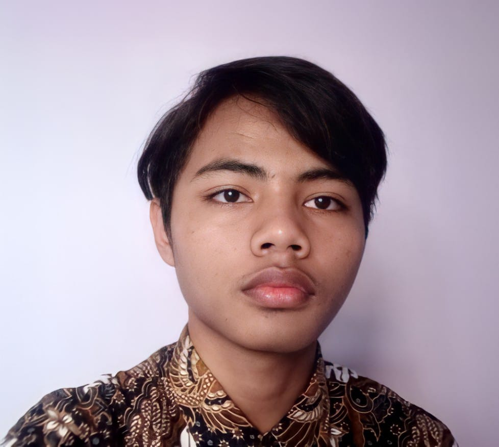

<html>
    <head>
        <title>selamat datang</title>
    </head>
    <body align="center" bgcolor="lightblue"></body>
        
        <h1 align="center">My curiculum Vitae></h1>
        <hr>
        <h2>BIODATA PRIBADI</h2>
        <UL>

        <body>
        
    
    
        </ul>
            <li>Nama : M. Yayang Zaelani</li>
            <li>NIM : 0110121294</li>
            <li>Kelas : SI 15</li>
            <li>Temoat, Tanggal, Lahir : Bogor 08 April 2003</li>
            <li>Jenis Kelamin : Laki - Laki</li>
            <li>Status Keperkawinan : Blum Nikah</li>
            <li>Agama : Islam</li>
            <li>No Telepon : 089605120989</li>
            <li>Kewarganegaraan : WNI</li>
            <li>Alamat : Kp. Cibolang, RT 03/08 Kec. Ciawi, Kab. Bogor</li>
            <li>Email : yayangzey28@gmail.com</li>
        </ul>   

    </ul>
    <h2>RIWAYAT PENDIDIDIKAN</h2>
    </ul>
        <li>2009 - 2015 <br><b>SDN 01 Cikereteg</b></li>
        <li>2015 - 2018 <br><b>SMPN 02 Ciawi</b></li>
        <li>2018 - 2021 <br><b>SMAN 01 Caringin</b></li>
    </ul>

    </ul>
    <ul>
    <h2>PENGALAMAN ORGANISASI</h2>
    </ul>
        <li>OSIS (Organisasi Siswa Intra Sekolah)</li>
        <li>Peramuka</li>
        <li>Pencak Silat</li>
    </ul>
    <h3>PRESTASI</h3>
        <li>FESTIVAL PENCAK SILAT BOTANI SQUARE CUP VIII - 2019</li>

    </ul>
    <h2>KETERAMPILAN</h2>
    </ul>
        <li>JUJUR</li>
        <li>Disiplin</li>
        <li>Komunikatif</li>
        <li>Kreatif</li>
        <li>Inovatif</li>
        <li>Bertanggung Jawab</li>
        <li>Team Work</li>
        </ul>
    <body>
</html>
